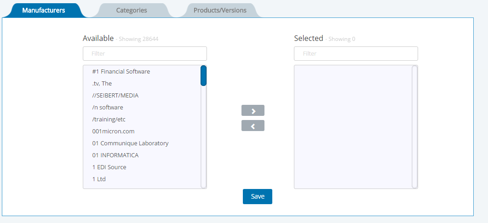
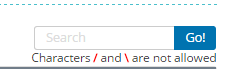

It is a web based product that can manage Troux customers extract the technology portfolio data from BDNA technopedia.
- Manufacturers iformation from application cache is fetched and displayed in the available table.
 - Then manufacturer data can be selected and can be transferred to the selected tab.
- Selection of manufacturers is a multi select, not more than 100 can be selected and moved to the selected table by clicking on the '>' button
- If more than 100 records are selected then the user is displayed with error message

- If any manufacturer is not wanted, then it can be removed from the selected table by selecting the Manufacturers and click on the '<' button.
- The final selected manufacturers are submitted by clicking on the Save button.
- User will be navigated to category page on clicking on the save button.
- Category information is fetched from the application cache. Specific categories can be selected from the categories table and can be moved to the selected table

- Select the specific categories from the available categories and then click on '>' button.
- Selected categories can be removed from the selected table by selecting and clicking on '<' button.
- Final selected categories can be submitted by clicking on the save button.
- Search box is provided for the user on the Available table and Selected table

- User must able to give minium 3 characters in search box
Products
- products/ Hardware models information is fetched from the application cache. Specific Software products/ Hardware models can be selected from the Software products/ Hardware models table and can be moved to the selected table.
- Radio button is provided to switch between software products and hardware model.
 - Software products/ Hardware models which are available are shown in the available table.

- Select all option is provided to select all the software products/hardware models. Individual selection of the software products/hardware models is also available.

- The selected software products/hardware models are moved to the selected table by clicking on the 'Add selected' button.

- Specific software products/hardware models can be searched with the search box.
- No of records per page can be selected from the available options of 10,25,50.

- Pagination is available for the selected and available tables. On clicking > button, navigated to the next page, and >> button to go to the last page. Similarly if < button is clicked, you will be navigated to the previous page and << button to the first page.
Versions
- Software product versions, which are in the available table are based on the software products which are selected in the software product tab
- Software product versions are displayed in available table, can be selected and moved to the selected table by selecting and clicking on 'Add selected' button.
- Software product versions can be deleted from the selected table by clicking on the delete icon.
- No of rows can be adjusted by the given options of 10, 25, 50.
- Pagination is available, making it easy to navigate through the records.
- The Software product versions can be submitted by clicking on the submit button.
Configuration
- BDNA Technopedia Connection: Parameters that will be used to connect to the technopedia services

- Valid Date Range: Use these settings to filter out the phases you do not want to be included in the lifecycles, based on the beginning date of the phase. Any phase that begins before the "Minimum Date" will be ignored, as will any date that begins after the "Maximum Date".

- Troux Import Options: User can choose the import options from
- Manufacturers
- Categories
- Products

- BDNA Technopedia Cache Refresh: Portfolio data is loaded from BDNA Technopedia in order to allow users to better search and filter which lifecycle information should be loaded into Troux. This information is periodically updated, to ensure that users are working from the latest set of data. The table below shows a history of these jobs, with the resulting status.
To manually run a data synchronization job from BDNA Technopedia, use the drop-down box below to select the type of information you would like to update. Then click the "Run" button.

History
- User is provided with the list of all saved sessions. The results of these sessions may have been sent to the Troux server for upload, as denoted by the status "In Progress" or "Completed". Or these sessions could simply be saved for future use, as denoted by the status "Open".
- View is provided for the user to go the particular request
- No of rows can be adjusted by the given options of 10, 25, 50.
- Pagination is available, making it easy to navigate through the records.